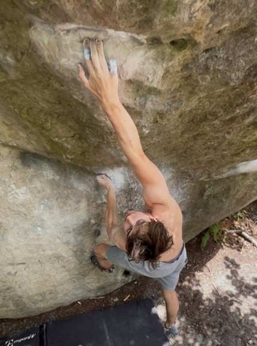

Engineering Portfolio
Exploring engineering through simulation, design, and making.
Let's Connect
Email Me
Beyond Engineering
What I enjoy most about engineering is the point where an idea stops being vague and starts becoming something you can test. That might mean building a CAD model from scratch, trying to understand why a simulation is behaving unexpectedly, or working through a design until the small details finally make sense.
I do not expect the first approach to always be the right one. A lot of the work I enjoy is in the iteration: finding what is missing, changing the model or assumption, and getting closer to an answer that is both technically sound and useful in practice. That is the thread running through the projects in this portfolio.
Outside engineering, climbing is a big part of my life. I like that it is physical, focused, and very honest: a route either works for you or it does not, and the answer is usually to step back, reassess, and try a different sequence. It has made me more comfortable with patience, repetition, and not getting everything right on the first go.
I also spend a lot of time reading fiction. I enjoy getting pulled into a well-built world or a story with characters facing difficult decisions. It is a useful contrast to technical work, and probably part of why I value creativity and good communication alongside analysis.
This site is a record of the projects I have worked on so far: the things that went well, the methods I learned, and the problems that took a few attempts to solve. I want to keep building the kind of engineering work that is careful, practical, and worth putting into the real world.